Using Omea Pro with Newsgroups
Using Omea Reader with Newsgroups
Omea ReaderOmea Pro features a built-in NNTP News reader. With it you can:
- Read articles on any internet newsgroup and view files attached to the articles
- View complete article threads
- Post articles and/or replies to any internet newsgroup, insert attachments in the newsgroup articles
- Send newsgroup articles to others
- Cancel sending newsgroups articles
- Keep the articles archive when unsubscribing from the newsgroup
- Print newsgroup articles
- Organize the newsgroups in folders
Now you can customize Omea's settings to set the per-server configuration in the News Server Properties/ Add News Server Dialogs, keep the drafts of your news posts in the Drafts folder, see the posts which you sent in the Sent Items folder, and delete the newsgroups posts into Omea's Deleted Resources folder in the Views and Categories pane.
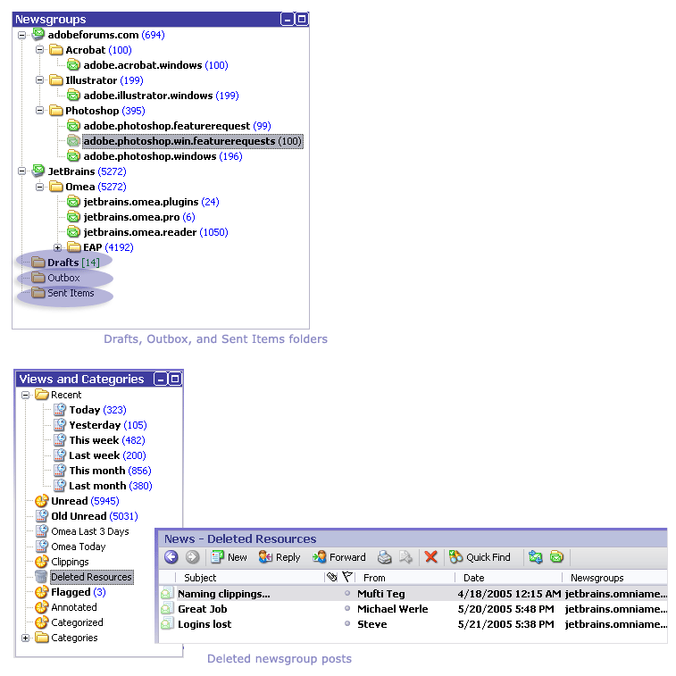
Setting Newsgroup Options
The default settings for the newsgroup configuration options should be adequate for most people, enabling them to get started using newsgroups right away. Especially if you have issues of international encodings, you may want to look at and adjust the newsgroup options before starting to work with newsgroups.
Subscribing to Newsgroups
In order to subscribe to a newsgroup, you must know the name of the news
server that hosts it. For example, the JetBrains news server is news.jetbrains.com.
Your computer must also be connected to the internet.
To subscribe to one or more newsgroups:
- Choose Tools | Manage Newsgroups…
on the main menu.
The Manage Newsgroups dialog appears.

- Click the Add… button.
The Add News Server dialog appears.
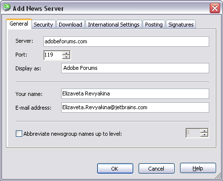 - Enter the name of the news server and any other information that may be required to access the newsgroup and click OK. For more information on the fields in the dialog, see Add News Server Dialog.
- Wait while the list of newsgroups on the server downloads. This could take a few seconds or a few minutes, depending on the speed of your connection and that of the news server. When the list is downloaded, the list of available newsgroups appears in the All and New tabs of Newsgroups section of the dialog. A count of the number of available newsgroups also displays.
- Expand the nodes of the list of newsgroups and check the box beside each of the newsgroups you wan to subscribe to. If there are many newsgroups, you can search for a particular one by entering part of the name in the box labeled Display newsgroups which contain:.
- Repeat the process to add more news servers and newsgroups.
The headers for the subscribed newsgroups download after you click OK to close the dialog.
Unsubscribing from a Newsgroup
You can use the Manage Newsgroups dialog described above to locate the newsgroup and uncheck the box next to the name in the Subscribed tab of this dialog to unsubscribe. However, the following way is probably easier:
To unsubscribe from a newsgroup:
- Select the News tab in the Main window.
- If it is not already visible, show the Newsgroups pane in the Left Sidebar.
- In the Newsgroups pane, locate the newsgroup from which you want to unsubscribe.
- Select the newsgroup and choose Unsubscribe
on its context menu or click Delete on the keyboard.
The Remove Subscription window opens. - Click OK to unsubscribe from the newsgroup and save the newsgroup articles in archive. The newsgroup icon becomes grayed, and you will no longer receive new messages in this newsgroup but its articles are still available for working in Omea. You can later delete the newsgroups articles if you choose Unsubscribe in the context menu or click Delete again.
To unsubscribe from the newsgroup and delete all articles which the newsgroup contains, select Delete all messages from newsgroup option and click OK.
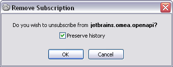
The Remove subscription dialog (Unsubscribing from the newsgroup "jetbrains.omea.openapi")
Newsgroups and Workspaces
If you subscribe to a newsgroup while working in the All Workspace, the newsgroup will be accessible in all other Workspaces, whether existing now or created in the future.
If you subscribe to a newsgroup while working in a custom Workspace, the newsgroup will be accessible only in that Workspace (and in All as well). If you want to have is accessible in another custom Workspace, you will need to explicitly add it. For more information, see Associating Resources with a Workspace.
Reading Articles
Once subscribed, you can select the newsgroup to read in the Newsgroups pane (Left sidebar).When you select a newsgroup, the list of articles appears in the Items List of the News tab. Unread articles appear in bold type.
When you select an article or a reply in the Items List, its text (body) appears in the Item Viewer.
You can view the article in a separate window. Either double-click on the article, or choose Open in Separate Window on the article’s context menu.
Refreshing the List of Articles
To refresh the articles list and download new headers:
- Select the newsgroup in the Newsgroups pane.
- On the main menu, choose Tools | Deliver News or press F9 on the keyboard.
Note that this action refreshes all newsgroups, not just the one you are reading.
Getting older headers and all headers for the newsgroup
It is possible to download a group of headers older the those that have already been downloaded. The number of older headers downloaded each time is controlled by your setting in the Download tab of News Server Properties form and Newsgroup options.
To download a group of older headers:
- Select the desired newsgroup in the Newsgroups pane.
- Right-click and choose Download Next Headers
on the context menu.
By default Omea downloads 300 headers at a time, but you can change this setting in the Newsgroup options and the Download tab of News Server Properties form.
Switching Encoding of the Downloaded News Article
Now you can enable the AutoPreview option (View>AutoPreview). You can choose to preview all news posts in the Items List or choose to autopreview the unread messages only (View>AutoPreview>Unread Items) or not to view the news articles using autopreview.
After you have downloaded some articles from the newsserver, you can easily change the selected article encoding. To do it, select the article in the Items List, double-click the article to open it in a new window and then from the Format menu, select the desired encoding (click near the encoding type).
Viewing Conversations
By default, the Items List simply displays a listing of articles and replies in the newsgroup. These can appear in different order depending on how you sort them using the column headers in the list. However, it is often more useful to view entire threads or conversations. There are different ways to do this, and you can select which you prefer.
Display Threaded menu item
The context menu for each newsgroup in the Newsgroups pane has a context menu item Display Threaded. When you select this item, it shows a check mark. Articles in the Items List that have one or more replies show a + symbol at the left which expands the list to show all the items in the article thread/conversation.
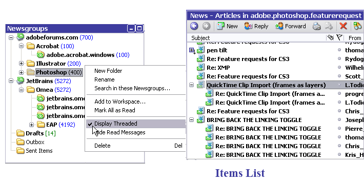When Display Threaded is checked, the Items List shows the entire thread for each article.
Show Conversation
When the Display Threaded option is not being used, the context menu item Show Conversation is enabled for each article. When you click this item, the entire thread/conversation of the selected article appears isolated in the items list. You can roll back to the entire list using the Back button of the resource toolbar.
The Show Conversation option may appear very useful for displaying the separated conversations if the Display Threaded option is not enabled.
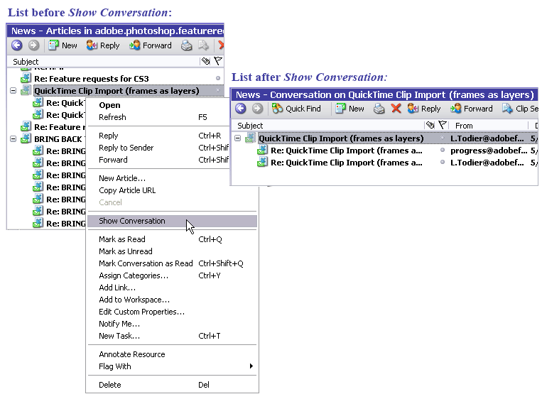Articles list before and after Show Conversation command
Go To Conversation
If you have used Show Conversation to isolate a particular conversation in the Items List, you can use Go To Conversation (same menus) to flip back to the conversation in the full list of articles in the Items List.
Expand All Threads
Use this command (View>Expand All Threads) to view all news articles and their comments as threads (Thread in general is a set of posts on a feed post, composed of an initial post about a topic and all responses to it). Please note that if the newsgroup, for which you apply this command, contains many posts and comments, it many require some time to “redraw” the News Items List.
Formatting Conversations
In order to dramatically improve visibility of news articles of the particular conversation (or its part) you can create a special formatting for them, for example with font and/or color. This will allow to rapidly find articles of this conversation in all other views.
To apply Font and Color formatting to the particular (sub)conversation:
- Select the article which thread you want to format to.
- Right-click on it and select Watch this conversation.
- In Edit Font and Color Attributes dialog select necessary formatting options:
- Now your conversation is formatted as follows:
- Now your conversation is formatted as follows:
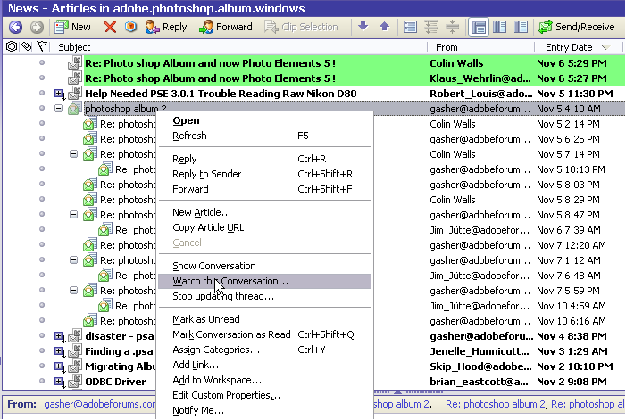
Items List context menu for formatting the conversation
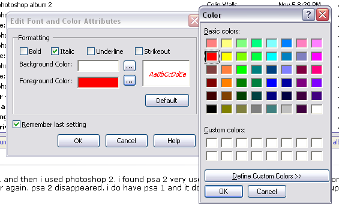
Selecting desired formatting in Edit Font and Color Attributes dialog
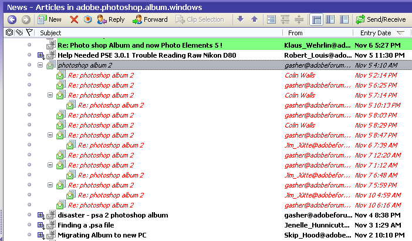
Conversation after applying the selected formatting
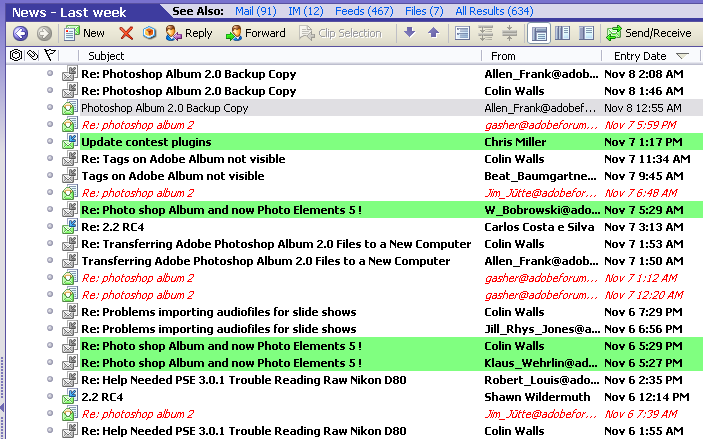
Messages of this conversation in the plain list for a view Last Week
Viewing Message Header
To open and view the nntp header of the newsgroup article:
- Select the item which headers you want to view.
- Navigate to the Links and Actionspane.
Action View Headers... is shown on the bottom of the actions list. - Click on the action and article headers will be shown in the separate window:
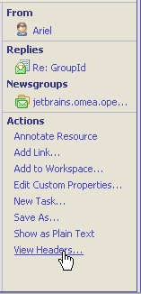
News attachments in the Links and Actions pane
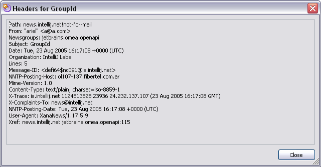
Header information for the selected newsgroup article
Working with Attachments in Newsgroups Posts
Omea ProOmea Reader allows to view and manage attachments included in the newsgroup posts. If the newsgroup post contains attachment(s), a "Clip" sign appears in the Attachment column for this post. You can sort the items list clicking the "Clip" column sign. If the Items List is sorted by the attachment criteria, it may look for example as shown below.
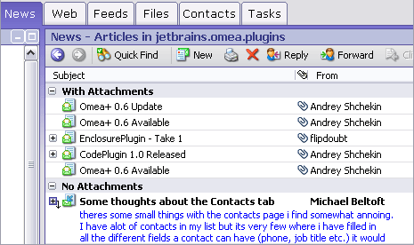
Attachments Column (in Omea Pro)
Viewing the Newsgroup Posts Containing Attachments
To sort the list of items in the Items List and view all articles containing attachments, click the Attachments column. If the Show Items in Groups option is selected in the View menu, articles in the Items List will be sorted using the attachments criteria.
Opening Newsgroups Post's Attachments
To open and view the attachment(s) included in the newsgroup article:
- Select the item which contains the attachments you want to view.
- Navigate to the Links and Actions
pane.
The attachment(s) is shown as a link with a picture corresponding to the attachment type under the News Attachment. If you move the mouse pointer to the attachment link, the attachment size will appear near the mouse pointer. - Do one of the following:
- Click the link with the attachment name.
The attachment will appear in the Item Viewer. - Right-click the link with the attachment name and
on the shortcut menu, select Open.
The application, which can open the attachment file type, will be launched.
- Click the link with the attachment name.
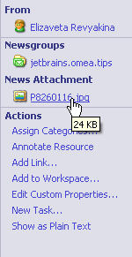
News attachments in the Links and Actions pane
If the newsgroup post contains an unsupported attachment type, Omea ProOmea Reader will offer to open the associated application to view the attachment.
Saving Newsgroup Post's Attachments
To save the newsgroup post's attachment:
- Follow steps 1 and 2 of the procedure described above.
- Right-click the link with the attachment name in the Links and Actions pane and on the shortcut menu, select Save As….
- Select the destination folder, type the attachment name if necessary, and click the Save button.
Marking Articles as Read
There are several ways to mark an unread article/reply as read:
- When an unread article/reply is selected in the Items List...
- On the Main menu, choose Edit | Mark As Read
- Press Ctrl + Q
- Choose the Items List context menu item Mark As Read
- In the Item Viewer, choose the context menu item Mark As Read
You can set an option in Omea General options to automatically mark items, including newsgroup articles, as read after a specified time interval. This option is enabled by default and the default time interval is 2 seconds.
Marking the entire thread/conversation as read
You can mark an entire thread/conversation as read in any of the following ways:
- With an unread article/reply selected in the Items List...
- On the Main menu, choose Edit | Mark Conversation As Read
- Press Ctrl + Shift + Q
- Choose the context menu item Mark Conversation As Read
- In the Item Viewer, choose the context menu item Mark Conversation As Read
- Click on the news article resource icon with Ctrl key pressed.
Marking the entire newsgroup as read manually
You can mark every article/reply in a newsgroup as read.
To mark an entire newsgroup as read:
- Select the newsgroup in the Newsgroups pane
- Right-click and choose Mark All As Read on the context menu or press Ctrl+Shift+A on the keyboard.
Marking the entire newsgroup as read automatically
You can specify when Omea will mark every article/reply in a newsgroup as read automatically in two cases:
- When you switch to another newsgroup.
- When you leave the application.
To mark an entire newsgroup as read automatically when switching to another newsgroup:
- Select the newsgroup in the Newsgroups pane
- Right-click and choose Mark All Read on Leave.
To mark an entire newsgroup as read automatically when leaving the application:
- Select the newsgroup in the Newsgroups pane
- Right-click and choose Mark All Read on Exit.
Hiding Read Articles
Now you can hide the newsgroup articles which you have already read. You can hide the articles which are read for the news server, specified newsgroup or in the the newsgroup folder. Navigate to the Newsgroups pane and either:
- Right-click the news server name and select Hide Read Messages
- Right-click the newsgroup name and select Hide Read Messages
- Right-click the newsgroup folder and select Hide Read Messages
Marking Articles as Unread
There are several ways to mark a read article/reply as unread:
-
When a read article/reply is selected in the Items List...
- On the Main menu, choose Edit | Mark As Unread
- Choose the context menu item Mark As Unread
- Click on the news article resource icon.
Posting Articles and Replies
With Omea ReaderOmea Pro, you can not only read newsgroups, but you also can post articles and reply to posted articles, assuming of course that the newsgroup allows this.
Posting a New Article
To post a new article:
- Switch to the News tab if necessary.
- Navigate to the desired newsgroup, article/reply in the Items List, or the article body in the Item Viewer.
- Press Ctrl+N
on the keyboard or right-click on the item and then choose New
Article… on the context menu.
The New Article window opens. - Type the article subject and text.
- Select the From: address using the drop-down box. The number of addresses in this drop-down box equals the number of addresses which you have set in properties of the news servers which you are subscribed to. For more information, see News Server Properties.
- Select the news server to which you are going to post your message.
- Insert the attachments if necessary. To do so:
- Click the Insert Attachment
button.
The Open window appears. - Navigate to the desired file, select it, and
click OK button to insert it as attachment.
The attachment appears in the right area of the message body. If you want to delete the attachment from the message, select it and press Del(ete) or right-click and select Remove (to select several attached files, press and hold down Ctrl or Shift and click the desired files). - Click the Newsgroups button, select the newsgroup to which you want to post an article and click OK button.
- Make other necessary actions and click the Send button or select Send from the File menu to post a new article to the desired newsgroup(s).
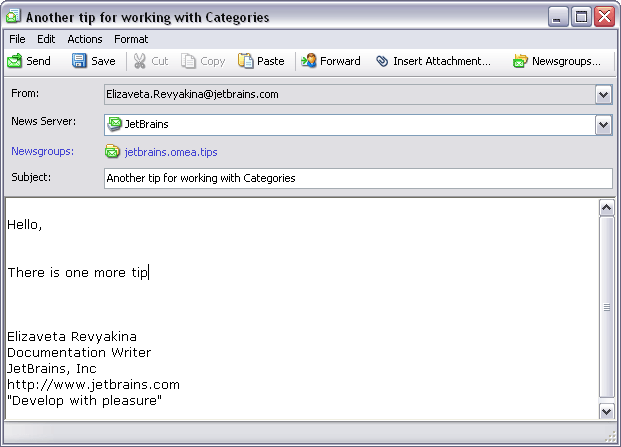
New Article window
You can also insert attachments from Windows Explorer and Omea's indexed folders. Navigate to the desired file in the Omea's Items List of the Files tab or the files list in Windows Explorer, select the desired file or files, drag it and drop to the New/Edit message form. The file (or files) will be attached to your message and appear in the attachments area.
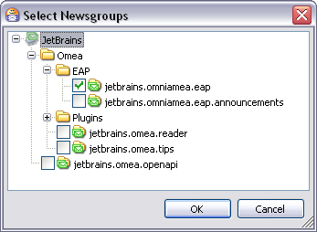
Select Newsgroups dialog
You can also use the New Article icon 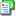 on the Items List toolbar to open the New Article dialog.
To save your post, click Save 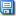 on the New Article window toolbar. Your post will be saved as a draft in the Drafts folder, and you can send it later.
You can view the articles you have posted in the Sent Items folder of the Newsgroups pane.
Replying to a Posted Article or Another Reply
To reply to an article or reply:
- Switch to the News tab if necessary.
- Navigate to the desired newsgroup, article/reply in the Items List.
-
Either...
- Choose Actions | Reply on the Main menu, or..
- Press Ctrl + R, or...
- Click the Reply button on the Items List toolbar: 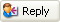
- In the window that opens, you will see the original message text decorated with special markers along the left side. Type the reply, and make other necessary actions, for example, insert the attachment(s) if necessary (repeat the step five of the procedure described above), and click Send. Please note that the newsgroup name is automatically inserted in your message.
Now you can set Omea's options to close the original message when you reply or forward it. See the Newsgroup options.
If you are reading the article/reply in a separate window, use the Reply button on the window’s toolbar.
If you want to reply without the original message being quoted press Ctrl + Shift + R instead.
If you selected a region of text in the original message and pressed Ctrl + R then only the selected part of text will be quoted in the reply message.
Sending an Article to Someone Else
It is possible to send a newsgroup article/reply to someone else via e-mail.
To send an article/reply:
- Select the item in the Items List.
-
Either...
- Choose Actions | Forward on the Main menu, or...
- Press Ctrl + Shift + F, or...
- Choose Forward in the context menu of the selected item, or the Item Viewer, or...
- Click the Forward button on the Items List toolbar: 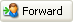
A new e-mail message is created with the title of the selected item
in the Subject, and the header and text in the message body.
Printing Newsgroup Articles
To print a newsgroup article/reply:
- Select the item in the Items List.
-
Either...
- Choose File | Print on the Main menu, or...
- Click the Print icon on the Items List toolbar.
Organizing Newsgroups Using Folders
If you are subscribed to one or several newsgroups at the news server, you may want to organize your newsgroups in folders using meaningful names for them. Moreover, you can create a hierarchy of newsgroups folders.
To create a folder for the newsgroup:
- Select the news server in the Items List.
- Either right-click and select New Folder.
- Type the folder name and click Enter on the keyboard.
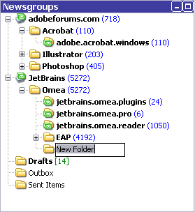
New Folder in the Newsgroups pane
To rename the newsgroup folder, right-click this folder and select Rename or press F3 and type the different name.
After you have created some new folder(s), you need to move the newsgroups to it. To do so:
- Select the newsgroup you want to move in the Newsgroups pane.
- Press and hold down the mouse button while moving the newsgroup to the folder.
The pointer changes its appearance as in figure below. -
Release the mouse button.
The newsgroup will be moved to the folder.
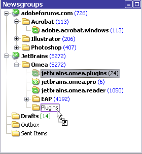
Moving "jetbrains.omea.pro" newsgroup to "Omea" folder
Repeat the procedure if you want to move more newsgroups to the folder.
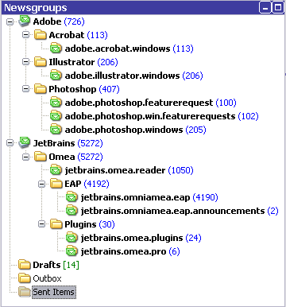
Example of organizing your newsgroups in folders
You can also move the newsgroups from one folder to another any time later and create as nested structure of folders as you wish.
You can delete the folder and its contents if you don't need either the folder and its contents. Please note that the newsgroups the folder contains will be deleted.
To do so:
- Navigate to the folder in the Newsgroups pane and select the folder you want to delete.
- Right-click the folder and select Delete or press Del(ete) on the keyboard.
- In the dialog which appears, click OK.
The folder and its contents will be removed from Omea.
Canceling the Newsgroup Articles
You can cancel sending your posts to the newsgroup if the news server which hosts the newsgroup allows it.
To do so:
- Select the news article you want to cancel in the Items List.
- Right-click and select Cancel.
Your newsgroup post will be canceled on the news server, and you will no longer see this post if you unsubsribe from the newsgroup and subscribe to it again.
Copying Article URL
You can now copy the URL of the article to use it as a reference in documents or newsgroups posts and so on. To copy the article URL, select the article in the Items List, right-click and select Copy Article URL. The article will be copied to the Clipboard. Paste it to the newsgroup post or other document. If you click the URL, the default news reader will be started, and the newsgroup post opens.
Saving News Articles
You can now save the news articles onto your PC and access them later.
To do so:
- Select the news article you want to save onto your PC in the Items List.
- From the File menu, select Save As.
The Save As dialog opens. - Select the location where you want to save the news article, type the article name and select the file type from the drop-down menu. You can save the newsgroup article as a text file (*.txt) or Outlook Express file (*.nws) and open them using some text editor or Outlook Express respectively.
Deleting News Articles
If you decide that you no longer need some newsgroups posts, you can delete them by pressing Del(ete) on the keyboard or selecting Delete command on the article shortcut menu. The article will be moved to the Deleted Resources in the Views and Categories pane (the article appears in the Items Viewer).
News articles in the Deleted Resources View are not removed from your Omea's database until you choose to empty the Deleted Resources. To delete the news articles permanently from Omea, right-click the Deleted Resources View and select Empty Deleted Resources or select certain news articles, right-click and select Delete or press Del(ete) on the keyboard.
To restore the article, navigate it in the Deleted Resources, select the article in the Item Viewer and on the article shortcut menu select Undelete.
Suspending Update of Conversations
Sometimes when a particular conversation in the newsgroup is not worth attention and you do not want to be disturbed by the new articles in it you can pause its update, or suspend it.To suspend a conversation:
- Select the news article - the head of a conversation you want to stop updating.
- Right-click and select Stop Updating Thread.
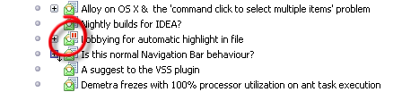
Highlighting stopped thread
If you decide to continue receive articles from the suspended conversation - right click on any article in the suspended conversation and selectRestore Ignored Articles.
Removing the News Server
You now have one more way of how to unsubscribe from the news server. Just select the news server in the Newsgroups pane and on the shortcut menu select Remove (the news servers have 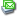 icon). When prompted, confirm you wish to remove the news server contents. Please note that the news server and all its newsgroups will be deleted.
Customizing Properties of Several News Servers
You can now easily change the options of several news servers which you are subscribed to in Omea ReaderOmea Pro.
To do so:
- Press and hold down Ctrl button and select the news servers for which you want to customize their settings.
- Right-click and select Properties.
Make necessary changes in the News Server Properties dialog which opens and click OK button to save changes. The new settings will be applied to all selected news servers.
Showing News Articles as Plain Text
Sometimes you may need to see the news articles as text and to turn the formatting option which is enabled in Omea by default. So, to see the news article as text, select this article in the Items List and either from the Actions menu, select Show as Plain Text or expand the Links and Actions pane and click the link with this command in the Actions group of commands.
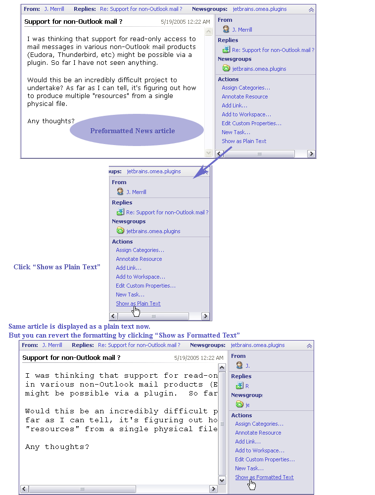
Disabling and enabling news articles formatting